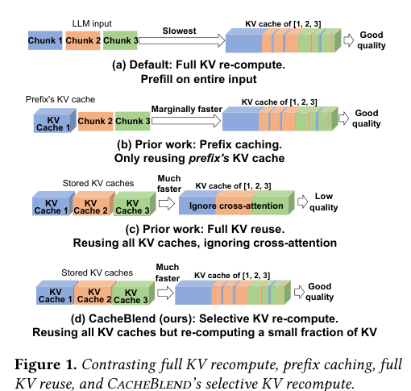
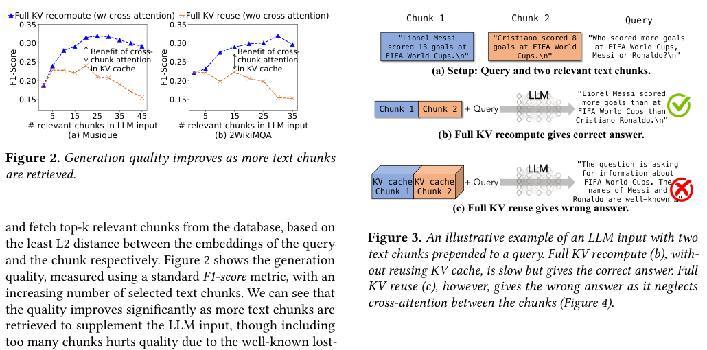
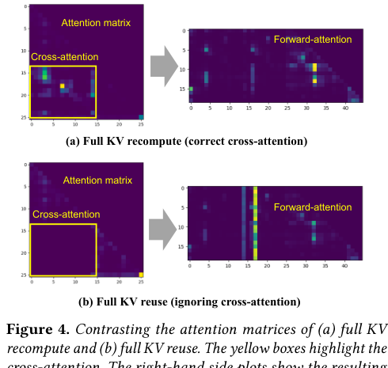
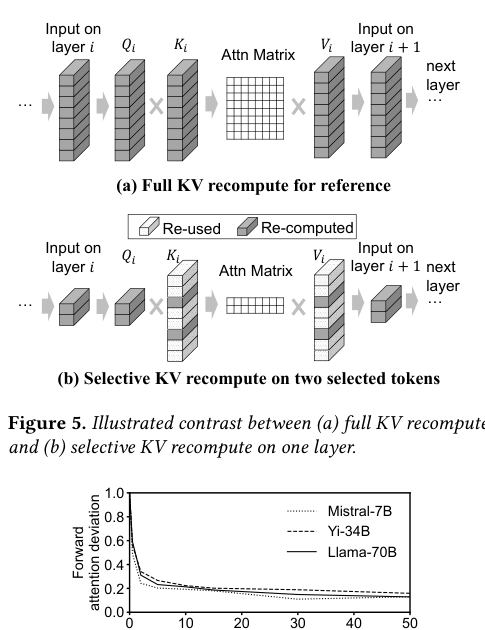
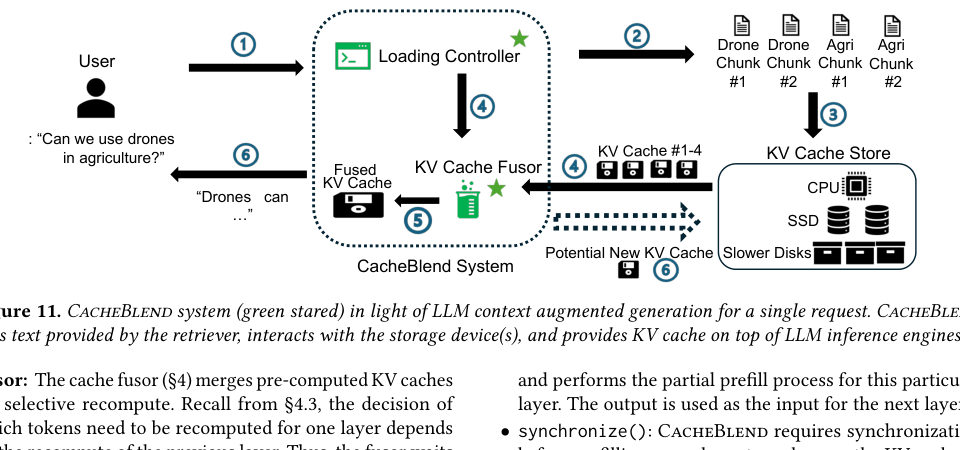
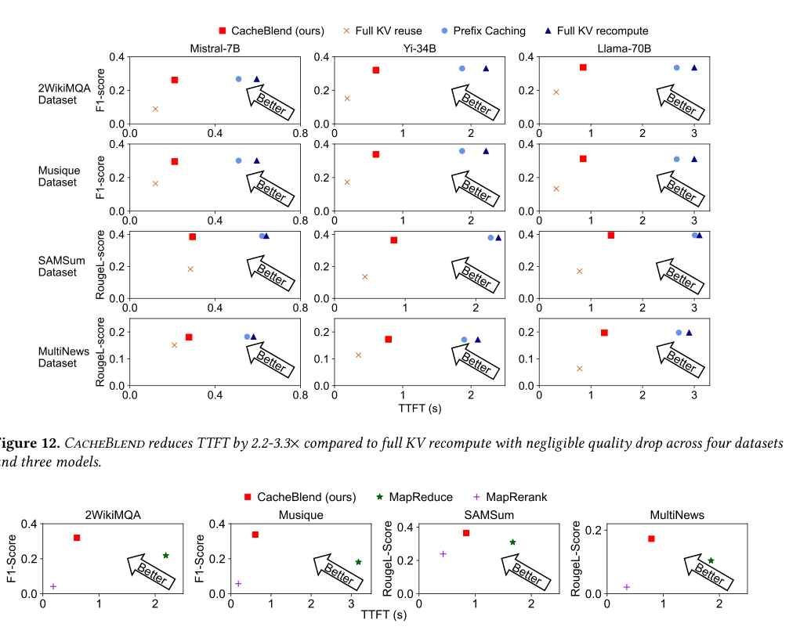

CacheBlend：面向 RAG 的 Cached Knowledge Fusion 中文翻译稿
摘要。CacheBlend 面向 RAG 和多文档问答中的 KV cache reuse。RAG 请求常包含多个检索到的文本 chunks。Full KV recompute 质量最好但 prefill 慢；prefix caching 只能复用第一个 prefix chunk；full KV reuse 虽快，却忽略不同 chunks 之间的 cross-attention，可能产生错误答案。CacheBlend 的折中方案是 selective KV recompute：复用每个 chunk 的预计算 KV，只对少量高影响 tokens 的 KV 进行重算和融合。论文提出用 KV deviation 识别 High-KV-Deviation tokens，并设计 loading controller、KV cache manager 和 KV cache fusor，把 cache 从 CPU/SSD 加载到 GPU 并逐层融合。实验显示，相比 full KV recompute，CacheBlend 将 TTFT 降低 2.2 到 3.3 倍；相比 prefix caching，throughput 最高提升 3.3 倍，同时保持接近 full recompute 的质量。
1 动机
RAG 的输入通常不是一个共享前缀，而是一组检索 chunks 加用户 query。若每次都对所有 chunks 重新 prefill，长上下文会导致 TTFT 很高。若只复用 prefix KV，非前缀 chunks 仍需要重算。若把每个 chunk 的 KV 直接拼接复用，则缺少 chunks 之间的 cross-attention，模型可能无法理解多个证据之间的关系。

论文用一个 Messi 与 Ronaldo 的例子解释问题：两个 chunk 分别给出球员信息，query 需要比较二者。Full KV reuse 忽略 chunk 间交互时，模型容易回答错误。多 chunk 越多，cross-attention 越重要，full KV reuse 与 full recompute 的质量差距越大。

2 Fast KV Cache Fusing
CacheBlend 的目标是快速把多个预计算 KV cache 融合成接近 full recompute 的新 KV cache。论文定义两类差异：KV deviation 衡量某 token 的预计算 KV 与 full recompute KV 的差距；attention deviation 衡量前向 attention matrix 的差距。直觉是：KV deviation 高的 tokens 更可能导致 attention deviation，需要被优先重算。

Selective recompute 的流程是：每层只选择一小部分 tokens，重算它们的 Q/K/V 或相关 KV，然后把未选中 tokens 的原 KV 复用回来。这样计算量近似与重算比例 r 成正比，而不是与完整 prompt 长度成平方增长。

3 如何选择重算 tokens
直接计算 KV deviation 需要先知道 full recompute KV，这会失去加速意义。CacheBlend 因此提出估计方案：在前若干层或少量 pilot computation 中观察 token 的 deviation，再推断后续层需要重算的 tokens。论文经验发现 10% 到 20% 的 HKVD tokens 往往足以恢复大部分质量。
这个设计背后依赖 attention sparsity：在 attention matrix 中，真正高影响的 token 对通常只占很小比例。若某 token 与其他 chunks 的交互很弱，它的预计算 KV 与 full recompute KV 差异也通常较小，不值得重算。
4 系统实现
CacheBlend 在 vLLM 上实现，主要组件包括 loading controller、KV cache manager 和 KV cache fusor。用户请求到来后，系统先检索相关 chunks，查询这些 chunks 的 KV cache 是否已经在 CPU/SSD 中存在；若存在，则加载到 GPU；若不存在，则计算并存储。KV cache fusor 逐层执行 selective recompute，并把融合后的 KV 交给 LLM engine 继续 decode。

系统还利用 pipeline overlap：下一层 KV cache 可以在当前层 selective recompute 时从存储加载，减少额外等待。对于大规模 RAG，KV cache 存在 SSD 或 CPU 中并不一定慢，只要加载和计算能重叠，TTFT 仍可显著下降。
5 实验结果
实验覆盖 2WikiMQA、Musique、SAMSum、MultiNews 等数据集，模型包括 Mistral-7B、Yi-34B、Llama-70B。论文比较 Full KV recompute、Prefix Caching、Full KV reuse、MapReduce/MapRerank 和 CacheBlend。
总体结果表明，CacheBlend 相比 full KV recompute 将 TTFT 降低 2.2 到 3.3 倍，质量下降很小；相比 full KV reuse，CacheBlend 显著提高 F1 和 ROUGE-L；相比 prefix caching，它能处理多个非前缀 chunks，throughput 最高提升 3.3 倍。

6 局限与选题启发
CacheBlend 主要面向 RAG 中多个静态文本 chunks 的融合，不直接处理复杂 agent workflow 中的动态状态、分支依赖和端到端调度。它的 token 选择也依赖经验性 attention sparsity，理论保证较弱。
对本仓库方向的意义。CacheBlend 是“多段知识 KV 融合”的关键参考。若后续选题关注 agent workflow，可把每个 agent 的 stable context、tool output 或中间摘要看作 chunks，研究哪些 token/state 需要重算，哪些可直接复用，以及这个选择如何与 workflow scheduler 和 cache placement 联合优化。
参考说明
参考文献保留在原 PDF 中。本文译稿覆盖摘要、动机、fast KV cache fusing、selective recompute、系统实现、实验和对选题的启发。